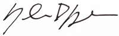

It has taken time for me to appreciate that architecture is not solely a building, a product is not simply an object, a photo is not merely an image, and certainly, a graphic is not just an illustration. If done successfully, each should awaken our senses; they should allow us to feel different, work well, revisit time, and ultimately communicate effectively.
At the core of these mediums exists a conversation between creativity, craft, and honesty; I carry this core to studioDre.com.
Shyronn Dre Smardon
Shyronn Smardon is currently enrolled in Algonquin College's Graphic Design program. If you are interested, or would like to find out more about the program, please take a look here.